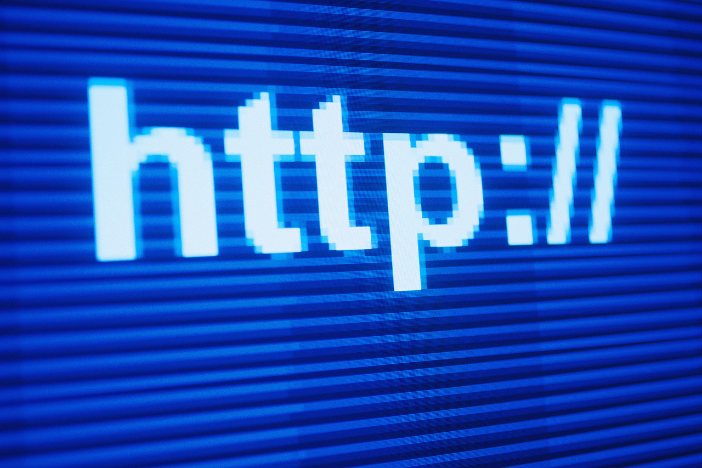

Facebook: The Most Addicting Detriment to Mental Health
Adrian Moy
Spring 2012

Facebook has quickly become the largest social networking platform and
is visited daily by many of its users, but recent studies have
indicated that the website may have a significant impact on mental
health. Apart from the physical detriments of sitting in front of a
computer for extended periods of time, those who visit Facebook more
than once a day may also experience depression, confidence issues, and
problems with self-esteem and happiness. Teens and young adults, who
are among the most prolific users of the website, are more susceptible
to self-esteem issues and as such, are especially affected. However, as
the whole idea of internet social networking is relatively new, the
effects it has on a user’s mental well-being are only just being
explored.
Three new studies have explored how one is
affected by the Facebook interactions. In a research presentation at
the 2012 meeting of the Society for Personality and Social
Psychologists, Instituto de Empresa-Madrid doctoral candidate Mudra
Mukesh found that receiving a friend request has a positive effect,
making the recipient feel connected and as though they belong to a
group and are wanted. However, after viewing friends’ status updates,
users generally feel worse about themselves. They will usually write a
status update that paints their life in the best possible way, while
those reading it often compare their lives to that of the status poster
and feel that their life is not as significant. After study
participants were asked how they felt about their place in life and
their achievements, those who recently checked status updates gave
themselves lower marks compared to those who had not recently visited
the site.
In the second study, researchers led by
Mai-Ly Nguyen at the University of Houston found a link between high
Facebook usage and depressive symptoms. This linkage was especially
high in men. Researchers theorize that this occurs because men may use
Facebook to compete with other men on a social level, while women may
use the site with more of a focus on connecting with others. Where
normal competition between men takes place in social situations, the
competition is now essentially ever-present, even at home, due to
Facebook. The constant stress could lead to increased production of
cortisol, a hormone released from the adrenal gland in response to
stress. Elevated levels of cortisol may be responsible for changes in
brain chemistry that cause depression. Although the link between
cortisol and depression is not fully understood, it is postulated that
cortisol interrupts the neurotransmission of the hormone that that is
widely attributed to affecting mood and happiness, serotonin.
The third study, conducted at the
University of Waterloo in Ontario this year, determined that some
people are more comfortable expressing themselves via Facebook than in
real life interactions, which could lead to self-esteem issues. After
interviewing 117 college-aged participants, lead researcher Dr. Amanda
Forest noticed, unsurprisingly, that users who often made upbeat and
cheery status updates were viewed more positively by their peers than
those who regularly wrote sad and somber updates. Additionally, the
participants who regularly wrote positive updates had reported having a
higher self-esteem than those who wrote negative posts. Interestingly,
when a person whose majority of posts was upbeat wrote a negative post,
it would receive much more comments and likes than that of someone
whose majority of posts was negative. This reinforces both users
previous self-evaluations: those with high self-esteem saw that others
cared and that they were acting out of character, while those with low
self-esteem felt that no one cared or that they were alone.
The issues at hand are not inherently due
to Facebook itself, so there are no real changes that can be made to
Facebook to mitigate the issues. However, it is suggested that people
who frequent Facebook be more aware of online social life. It has also
been pointed out that parents need to careful and monitor the amount of
time that teenagers spend on Facebook, as they are particularly
susceptible. As Facebook is currently the largest social media site,
other smaller platforms have not yet been studied to see if there are
similar effects. As social media platforms become more pervasive,
assuming that the effects are repeated would be justifiable.
With more than 800 million active members,
Facebook is an extremely large community. People often frequent
Facebook daily, and younger age groups often check Facebook multiple
times through the day or spend long periods of time on the website. One
would be hard-pressed to find a college student who did not have a
Facebook account. As Facebook grows larger and more pervasive in our
lives, it is important to be aware of the actual effects that the
social networking site can have on us.
About the Author
Adrian Moy, class of 2013, is an Integrative Biology major and Nutritional Science minor who is currently a research associate at the Oakland Children's Hospital.